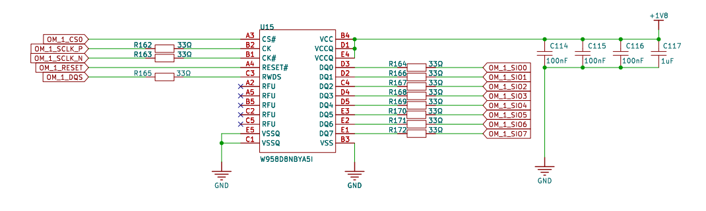
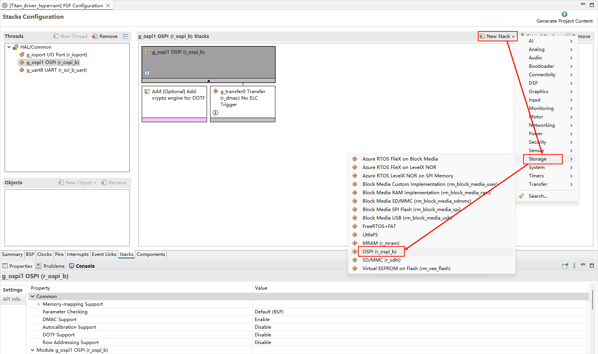
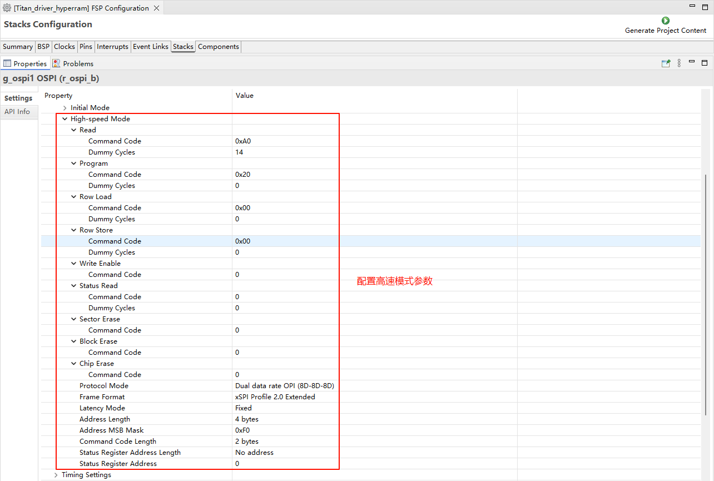
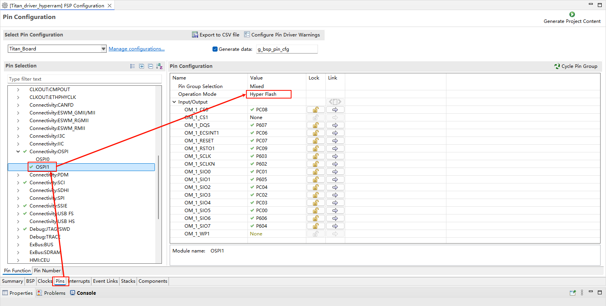
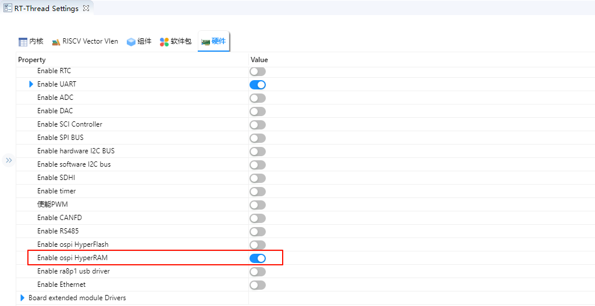
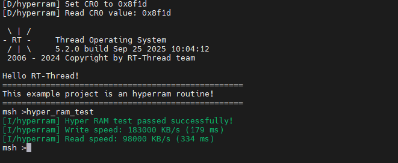

HyperRAM 使用说明
中文 | English
简介
本示例演示了如何在 Titan Board 上使用 Octa-SPI (OSPI) 接口连接 HyperRAM 外部存储器，并基于 RT-Thread 驱动框架进行读写测试。通过该示例，用户可以熟悉 RA8 OSPI 控制器的配置方法、HyperRAM 的工作模式，以及在 RT-Thread 下访问外部存储器的应用流程。
HyperRAM 简介
1. 概述
HyperRAM 是一种由 Cypress（现 Infineon） 首次推出的 高性能低引脚数（Low Pin Count, LPC）DRAM。
它基于 HyperBus 接口，主要面向 嵌入式系统、显示控制、IoT 设备、汽车电子 等需要 高带宽、低功耗、简单接口 的应用。
HyperRAM 属于 pSRAM（Pseudo-SRAM，伪静态RAM），它在外部表现得像 SRAM（简单读写，无需用户刷新），但内部实际上是低功耗 DRAM（自刷新）。
2. 架构与接口
HyperRAM 使用 HyperBus 接口，其特点是：
引脚数少：通常仅需 13 个信号引脚（8-bit 数据总线 + 控制/时钟），相比传统 SDRAM（几十个引脚）大幅减少 PCB 复杂度。
双数据速率（DDR）传输：在时钟上升沿和下降沿传输数据，提高带宽。
串行控制协议：通过命令-地址-数据序列访问内存，简化设计。
接口结构如下：
数据线 DQ[7:0]：8 位双向数据
RWDS（Read-Write Data Strobe）：数据同步信号
CLK：时钟输入
CS#：片选信号
RESET#：复位
CKE：时钟使能
3. 工作原理
HyperRAM 通过 命令+地址+数据 的方式访问：
命令阶段
主机发送读/写命令和目标地址。
延迟阶段
HyperRAM 准备内部存储阵列（延迟可配置）。
数据传输阶段
以 DDR 方式在 DQ[7:0] 上传输数据，RWDS 提供数据同步。
内部采用 DRAM 技术，支持 自刷新，但对外表现为 “像 SRAM 一样” ——用户无需关心刷新操作。
4. 性能特性
数据总线宽度：8 位
工作电压：1.8 V 或 3.0 V 低功耗设计
数据速率：最高可达 400 MB/s（200 MHz DDR × 8-bit）
容量范围：32 Mb ~ 512 Mb（4 MB ~ 64 MB）
低功耗：支持深度睡眠模式，待机电流 < 10 µA
简单接口：13 根引脚即可完成高速访问
5. HyperRAM 的优势
低引脚数
与传统 SDRAM/PSRAM（30+ 引脚）相比大幅减少引脚需求，节省 PCB 走线。
高带宽
DDR 接口，带宽可达 400 MB/s，足以支持 图像缓存、显示刷新 等应用。
低功耗
适合电池供电设备，如 IoT、可穿戴设备。
易用性
对外表现类似 SRAM，简单易用，无需用户刷新。
6. 与其他存储的对比
特性 |
HyperRAM |
SDRAM / DDR |
SRAM |
NOR Flash |
|---|---|---|---|---|
接口 |
HyperBus (13-pin) |
并行 16~32 位 |
并行/串行 |
SPI/QSPI |
容量范围 |
32Mb ~ 512Mb |
64Mb ~ 1Gb+ |
小（Kb~Mb） |
4Mb ~ 2Gb |
带宽 |
~400 MB/s |
~800 MB/s+ |
~50 MB/s |
~100 MB/s |
功耗 |
低 |
较高 |
较低 |
较低 |
应用场景 |
缓存/帧缓冲 |
系统主存 |
高速小容量 |
程序存储 |
RA8 系列 OSPI (Octa-SPI) 特性
OSPI (Octa-SPI) 是 RA8 系列 MCU 中的重要外设接口模块，专门用于连接高速外部存储器（如 Octa Flash、HyperFlash、HyperRAM），以满足嵌入式应用在 大容量存储、高速缓存、XIP 执行等方面的需求。
1. 协议支持
RA8 OSPI 兼容多种存储接口协议，灵活适配不同外部存储器：
SPI 标准模式：1-1-1 (单线指令、地址、数据)
Dual-SPI：2-2-2 模式（双线）
Quad-SPI：4-4-4 模式（四线）
Octa-SPI：8-8-8 模式（八线，支持 DDR/SDR）
HyperBus 协议：
用于连接 HyperRAM / HyperFlash
双边沿数据采样（DDR）
传输速率可达 333 MB/s
2. 数据传输能力
最高频率：支持 166MHz 时钟
DDR 模式：数据在时钟上升沿与下降沿同时传输（带宽翻倍）
有效带宽：
Octa-SPI DDR 模式，8-bit 总线，166 MHz → 333 MB/s
HyperBus 模式同样可达 333 MB/s
Burst 访问：支持可编程突发长度（16/32/64/128 字节），提升连续读写效率
3. 存储器映射与执行
RA8 OSPI 支持将外部存储映射到 MCU 地址空间，使外设访问与片上 SRAM 类似，方便应用：
XIP (Execute-In-Place)：可直接在外部 Flash 中执行代码
存储映射缓存：
内建预取缓冲器，提高指令读取速度
适合频繁读取的代码和数据场景
可配置读写访问模式：
直接访问模式（命令驱动）
存储映射模式（内存地址空间直接访问）
4. 命令与时序支持
可编程命令集：支持用户配置的指令序列（适配不同厂商 Flash/HyperRAM）
DQS (Data Strobe) 支持：在 DDR 模式下提供时序同步，提高数据完整性
片选控制：多片选引脚，可支持多个外部存储器
延迟补偿：可配置时钟延迟、采样点位置，以适配高速 HyperRAM/HyperFlash
5. 低功耗与休眠管理
支持外设低功耗模式：
HyperRAM 深度休眠模式 (Deep Power-Down)
HyperFlash 待机模式
快速唤醒：通过片选控制快速恢复存储访问
适合电池供电应用
硬件说明

FSP 配置
新建 r_ospi_b stack：

配置 r_ospi_b stack：



HyperRAM 引脚配置：

HyperRAM 所有相关引脚的驱动能力配置为 H，OM_1_SIO0~OM_1_SIO7 需要配置为输入上拉。

RT-Thread Settings 配置
在 RT-Thread Settings 中使能 HyperRAM。

软件说明
本例程的 HyperRAM 测试源码位于 ./board/ports/hyperram 中：
#include <string.h>
#include <inttypes.h>
#include "hal_data.h"
#include "hyper_ram_test.h"
#include <rtthread.h>
#define DBG_TAG "hyperram"
#define DBG_LVL DBG_INFO
#include <rtdbg.h>
#define ram_cfg g_ospi1_cfg
#define ram_ctrl g_ospi1_ctrl
#define OSPI_OM_RESET BSP_IO_PORT_12_PIN_07
#define HYPER_RAM_RESET_DELAY() R_BSP_SoftwareDelay(10UL, BSP_DELAY_UNITS_MICROSECONDS)
#define HYPER_RAM_CFG_REG_0_ADDRESS (0x01000000)
#define HYPER_RAM_CFG_REG_1_ADDRESS (0x01000001)
ospi_b_xspi_command_set_t g_hyper_ram_commands[] =
{
{
.protocol = SPI_FLASH_PROTOCOL_8D_8D_8D,
.frame_format = OSPI_B_FRAME_FORMAT_XSPI_PROFILE_2_EXTENDED,
.latency_mode = OSPI_B_LATENCY_MODE_FIXED,
.command_bytes = OSPI_B_COMMAND_BYTES_1,
.address_bytes = SPI_FLASH_ADDRESS_BYTES_4,
.read_command = 0xA0,
.read_dummy_cycles = 11,
.program_command = 0x20,
.program_dummy_cycles = 11,
.address_msb_mask = 0xF0,
.status_needs_address = false,
.p_erase_commands = NULL,
}
};
uint16_t swap16(uint16_t value)
{
uint16_t ret;
ret = value << 8;
ret |= value >> 8;
return ret;
}
static fsp_err_t hyper_ram_config_get(uint32_t address, uint16_t * const p_value_out)
{
spi_flash_direct_transfer_t xfer = {
.address = address,
.address_length = 4,
.command_length = 2,
.command = 0xE000,
.data_length = 2,
.dummy_cycles = 11,
};
fsp_err_t err = R_OSPI_B_DirectTransfer(&ram_ctrl, &xfer, SPI_FLASH_DIRECT_TRANSFER_DIR_READ);
if (err != FSP_SUCCESS)
{
LOG_E("HyperRAM config get failed!");
return err;
}
*p_value_out = (uint16_t) xfer.data;
return FSP_SUCCESS;
}
static fsp_err_t hyper_ram_config_set(uint32_t address, uint16_t value)
{
spi_flash_direct_transfer_t xfer = {
.address = address,
.address_length = 4,
.command = 0x6000,
.command_length = 2,
.data = (uint16_t) value,
.data_length = 2,
.dummy_cycles = 0,
};
fsp_err_t err = R_OSPI_B_DirectTransfer(&ram_ctrl, &xfer, SPI_FLASH_DIRECT_TRANSFER_DIR_WRITE);
if (err != FSP_SUCCESS)
{
LOG_E("HyperRAM config set failed!");
return err;
}
return FSP_SUCCESS;
}
/* Define the static array at address 0x70000000 using section attribute */
#define TEST_SIZE 8388608 // 32MB (8M x 4 bytes)
static uint32_t test_array[TEST_SIZE] __attribute__((section(".ospi1_cs0_noinit")));
void hyper_ram_test(void)
{
const uint32_t test_bytes = TEST_SIZE * 4; // Total bytes: 32MB
uint32_t errors = 0;
rt_tick_t start_time, end_time;
uint32_t write_speed_kbs, read_speed_kbs;
uint32_t write_time_ms, read_time_ms;
/* Write pattern to RAM and measure time */
start_time = rt_tick_get();
for (uint32_t i = 0; i < TEST_SIZE; i++)
{
test_array[i] = i ^ 0xA5A5A5A5; // Use XOR pattern for better error detection
}
end_time = rt_tick_get();
/* Calculate write speed in KB/s and time in ms */
write_time_ms = (end_time - start_time) * 1000 / RT_TICK_PER_SECOND;
if (write_time_ms > 0)
{
write_speed_kbs = (test_bytes / 1024) / write_time_ms * 1000; // KB/s
}
else
{
write_speed_kbs = 0; // Avoid division by zero
}
/* Verify written pattern while measuring read time */
start_time = rt_tick_get();
for (uint32_t i = 0; i < TEST_SIZE; i++)
{
uint32_t expected = i ^ 0xA5A5A5A5;
uint32_t actual = test_array[i];
if (actual != expected)
{
errors++;
// rt_kprintf("errors:%d actual:%d\n", errors, actual);
}
}
end_time = rt_tick_get();
/* Calculate read speed in KB/s and time in ms */
read_time_ms = (end_time - start_time) * 1000 / RT_TICK_PER_SECOND;
if (read_time_ms > 0)
{
read_speed_kbs = (test_bytes / 1024) / read_time_ms * 1000; // KB/s
}
else
{
read_speed_kbs = 0; // Avoid division by zero
}
/* Print test results */
if (errors == 0)
{
LOG_I("Hyper RAM test passed successfully!");
}
else
{
LOG_E("Hyper RAM test failed with %u errors", errors);
}
/* Print read and write speeds as integers */
LOG_I("Write speed: %u KB/s (%u ms)", write_speed_kbs, write_time_ms);
LOG_I("Read speed: %u KB/s (%u ms)", read_speed_kbs, read_time_ms);
}
MSH_CMD_EXPORT(hyper_ram_test, hyper_ram_test);
int hyper_ram_init(void)
{
/* Change OM_RESET back to normal IO mode. */
R_IOPORT_PinCfg(&g_ioport_ctrl,
OSPI_OM_RESET,
IOPORT_CFG_PORT_DIRECTION_OUTPUT
| IOPORT_CFG_DRIVE_HIGH
| IOPORT_CFG_PORT_DIRECTION_OUTPUT
| IOPORT_CFG_PORT_OUTPUT_HIGH);
/* Pin reset the OctaFlash */
R_BSP_PinWrite(OSPI_OM_RESET, BSP_IO_LEVEL_LOW);
HYPER_RAM_RESET_DELAY();
R_BSP_PinWrite(OSPI_OM_RESET, BSP_IO_LEVEL_HIGH);
HYPER_RAM_RESET_DELAY();
/* Open the interface and immediately transition to 8D-8D-8D mode */
R_OSPI_B_Open((spi_flash_ctrl_t *)&ram_ctrl, &ram_cfg);
R_OSPI_B_SpiProtocolSet(&ram_ctrl, SPI_FLASH_PROTOCOL_8D_8D_8D);
uint16_t cfg_reg0 = 0;
hyper_ram_config_get(HYPER_RAM_CFG_REG_0_ADDRESS, &cfg_reg0);
LOG_D("Read CR0 value: 0x%x", swap16(cfg_reg0));
uint16_t value0 = 0x8f1d;
hyper_ram_config_set(HYPER_RAM_CFG_REG_0_ADDRESS, swap16(value0));
LOG_D("Set CR0 to 0x%x", value0);
cfg_reg0 = 0;
hyper_ram_config_get(HYPER_RAM_CFG_REG_0_ADDRESS, &cfg_reg0);
LOG_D("Read CR0 value: 0x%x", swap16(cfg_reg0));
return RT_EOK;
}
INIT_BOARD_EXPORT(hyper_ram_init);
编译&下载
RT-Thread Studio：在RT-Thread Studio 的包管理器中下载 Titan Board 资源包，然后创建新工程，执行编译。
编译完成后，将开发板的 USB-DBG 接口与 PC 机连接，然后将固件下载至开发板。
运行效果
按下复位按键重启开发板，输入 hyper_ram_test 命令开始 HyperRAM 测试。
